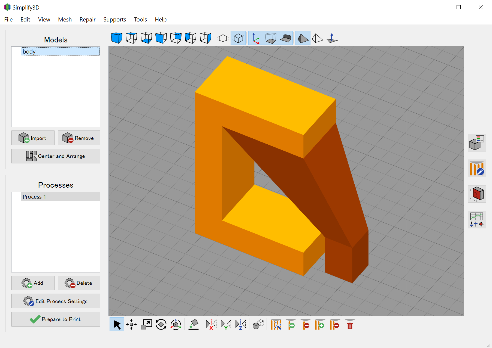

Simplify3D でツリーサポート
概要
Simplify3D にあるカスタムサポート機能を使って手動でツリーサポートを設定するためのメモ
はじめに
最近のスライサーにはサポート形状を工夫することによってモデルとの接点を減らし造形物の表面を綺麗にすることができる、ツリーサポートやオーガニックサポートと呼ばれる機能が搭載されています。Simplify3D V5 にはこの機能がないのですが、手動でサポート作ってカスタムサポート機能使えば似たようなことができるっぽかったので試してみました。（例によって検索しても出てこないんですね、これが）
手順
モデルとサポートを同一座標系でモデリングして、それぞれ STL などでエクスポートします。試しに以下のようなコの字型のモデルと斜めに伸びるサポートを用意しました。
Simplify3D で STL ファイルをインポートすると自動的に中央に配置されてしまいモデルとサポートの相対位置が揃わないので、インポート後に Reset All Transforms で原点に移動させます。
位置関係が揃ったあとに、サポートに対して Change Model Type… メニューから Custom support structure を選択します。
これでモデルとサポートが一体になるので、あとは普通にスライスすれば指定したサポート部分がちゃんとサポートとしてスライスできます。

備考
Fusion でモデリングしているなら、ツリーサポートの手動生成にはロフト機能が便利です。